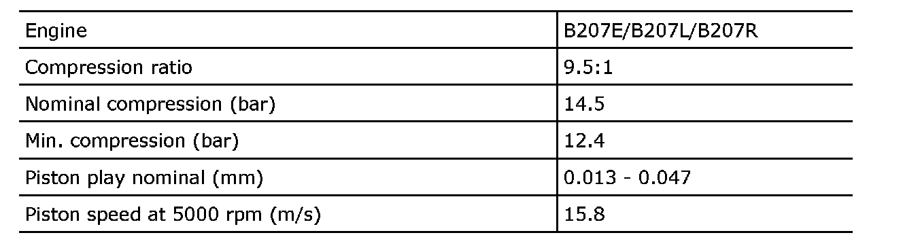
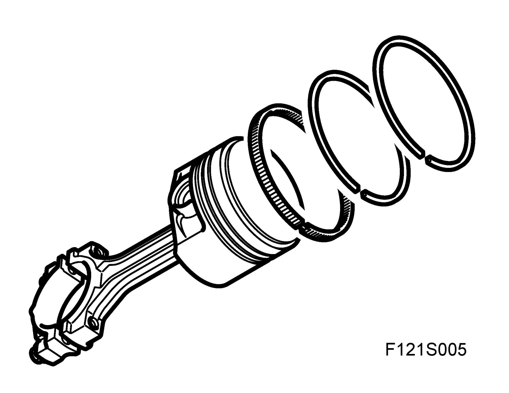
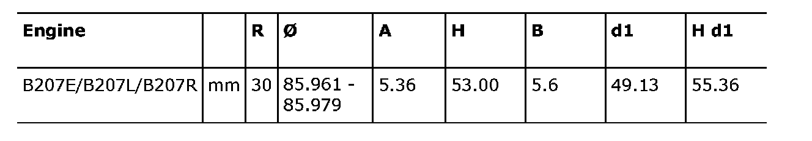
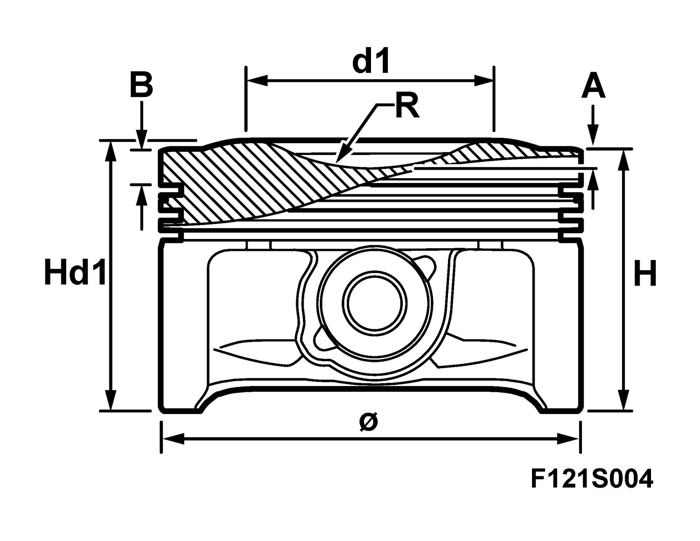
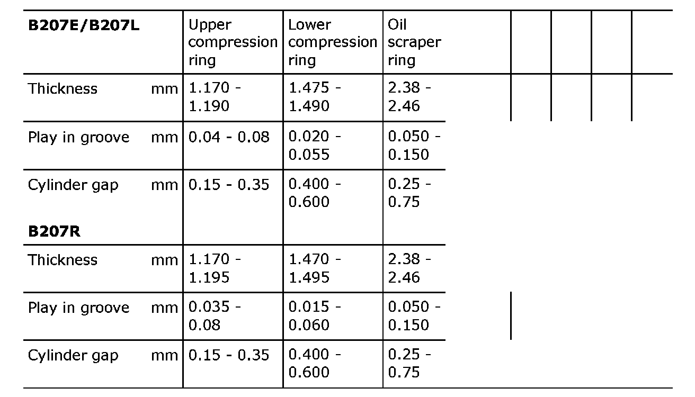
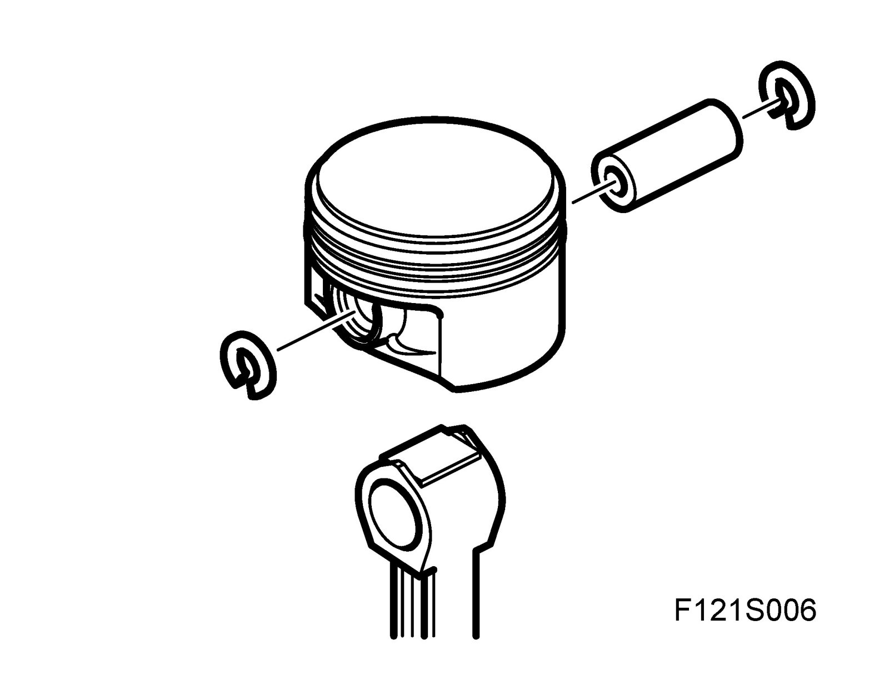
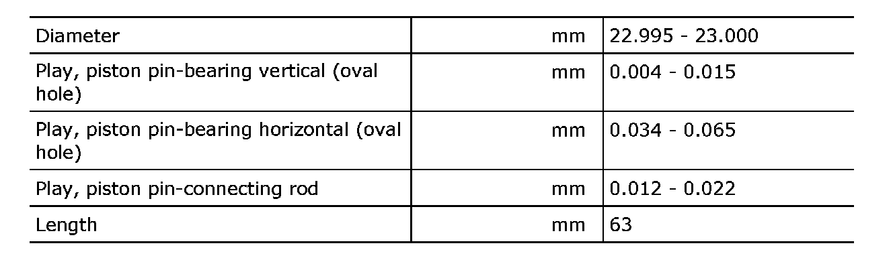

Piston: Specifications
PistonsGeneral data

Important
Pistons of different makes must not be used in the same engine. The piston make is cast onto the piston.
Piston types

The piston diameter is measured perpendicular to the piston pin and 9mm from the piston base.

Pistons
Piston class and cylinder travel
The pistons for B207E/B207L/B207R only have one class
The cylinders in B207E/B207L/B207R only have one class
Piston rings


Piston pin

